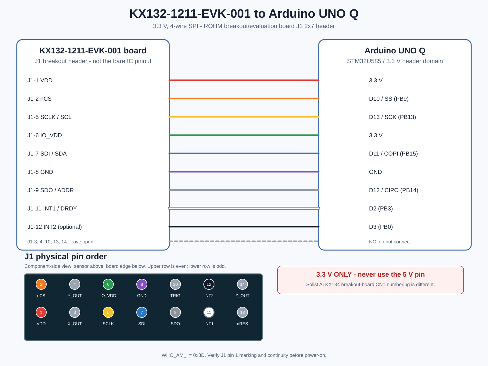
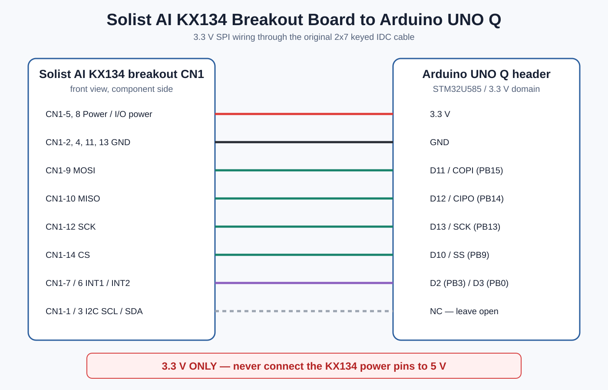
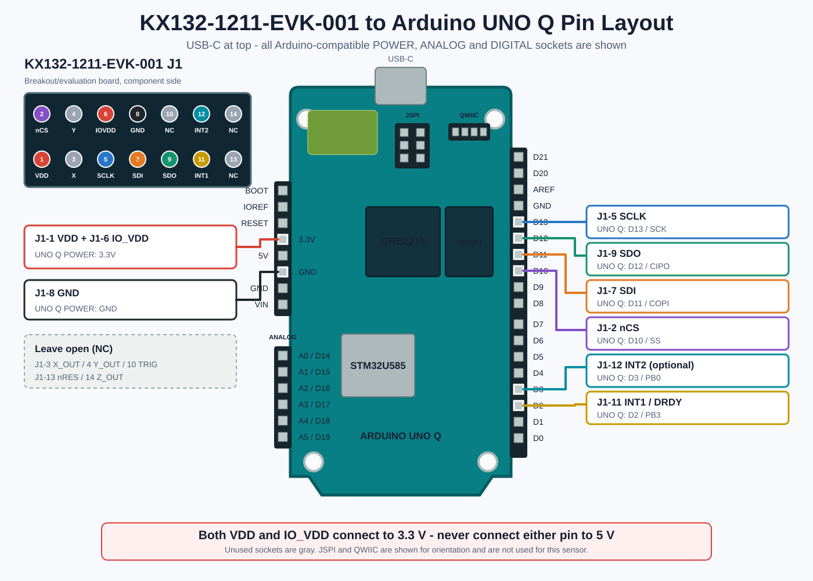

採用するKX132-1211-EVK-001を中心に、MPU9250ブレークアウト基板と従来のSolist AI用KX134ブレークアウトボードも同じページで比較できます。各図はセンサーIC本体ではなく、それぞれの搭載基板・コネクタを基準にしています。
KX132評価基板と、これまでのSolist AI用KX134ブレークアウトボードではコネクタ番号が異なります。使用する基板名を確認して対応する図を使用してください。

ROHM標準J1（2x7）のSPI配線。VDD/IO_VDDは3.3 V、INT1はD2です。
PREVIOUS HARDWARE
DT-EBML63Q2557評価キットで使用するCN1の配線。KX132 EVKのJ1とはピン番号が異なります。
このピン配置は、KX132-1211 IC本体ではなく、ICを搭載したROHMのブレークアウト／評価基板KX132-1211-EVK-001のJ1端子です。 IC本体は12ピンLGA、J1は2列7ピン・2.54 mmピッチです。
USB-Cを上にしてUNO Qの部品面を見た配置です。Arduino互換のPOWER 8ピン、ANALOG 6ピン、DIGITAL 18ピンを、未使用ソケットも含めてすべて描画しています。左側POWERヘッダの3.3 VとGND、右側DIGITALヘッダのD13・D12・D11・D10・D3・D2へ接続します。ANALOG、JSPI、QWIICはこのセンサー接続では使用しません。

配置確認: Arduino公式「UNO Q Full Pinout」の部品面を基準に作図。SPIはD10-D13、INT1はD2、任意のINT2はD3を使用します。VDDとIO_VDDはどちらもPOWERヘッダの3.3 Vへ接続します。
| J1 | 評価基板の信号 | UNO Q | 扱い |
|---|---|---|---|
| 1 | VDD | 3.3 V | センサー電源 |
| 2 | nCS | D10 / SS / PB9 | SPI CS |
| 3 | X_OUT | — | NC |
| 4 | Y_OUT | — | NC |
| 5 | SCLK / SCL | D13 / SCK / PB13 | SPI SCK |
| 6 | IO_VDD | 3.3 V | I/O電源 |
| 7 | SDI / SDA | D11 / COPI / PB15 | SPI MOSI |
| 8 | GND | GND | 共通GND |
| 9 | SDO / ADDR | D12 / CIPO / PB14 | SPI MISO |
| 10 | SYNC / TRIG | — | NC |
| 11 | INT1 | D2 / PB3 | データ準備割り込み |
| 12 | INT2 | D3 / PB0 | 任意・予備割り込み |
| 13 | nRES | — | NC |
| 14 | Z_OUT | — | NC |
基板を部品面から見てKX132-1211を上、J1を下に置くと、センサー側の列は左から2・4・6・8・10・12・14、基板端側の列は左から1・3・5・7・9・11・13です。ROHM公式基板写真では基板端側の左端に1番ピンを示す三角印があります。リボンケーブルの反対側を嵌合面から見ると左右が反転するため、通電前にJ1-1の導通を確認してください。
以下は10端子MPU9250ブレークアウト基板用です。SCL/SDA/ADOはSPIモードでSCK/COPI/CIPOとして使用し、EDA・ECL・FSYNCは接続しません。
USB-Cを上にして基板の部品面を見た配置です。右側のデジタルヘッダへSPIと割り込み、左側のPOWERヘッダへ3.3 VとGNDを接続します。
配置確認: Arduino公式「UNO Q Full Pinout」の部品面を基準に作図。SPIはJDIGITALのD10-D13、INTは同じヘッダのD8（PB4）を使用します。スケッチでは attachInterrupt(digitalPinToInterrupt(8), handler, RISING) として設定します。
ボードのシルク印刷を読み、次の左から右の順番を基準にします。
注意: ADOはボード表記をそのまま記載しています。SPIモードではMISO/CIPOとして使います。EDAとECLは補助I²C端子のため、この接続では使用しません。
| 順番 | MPU9250 | UNO Q | 扱い |
|---|---|---|---|
| 1 | VCC | 3.3 V | 電源 |
| 2 | GND | GND | 共通GND |
| 3 | SCL | D13 / SCK / PB13 | SPI SCK |
| 4 | SDA | D11 / COPI / PB15 | SPI MOSI |
| 5 | EDA | — | NC |
| 6 | ECL | — | NC |
| 7 | ADO | D12 / CIPO / PB14 | SPI MISO |
| 8 | INT | D8 / PB4 | データ準備割り込み |
| 9 | NCS | D10 / SS / PB9 | SPI CS |
| 10 | FSYNC | — | NC |
10端子ブレークアウト
SCK / MOSI / MISO / CS
データ準備割り込み
右側ヘッダへ集約
0x71を確認してから連続取得することセンサ仕様: MPU-9250 Product Specification ／ 基板配置: Arduino公式 UNO Q Full Pinout ／ 公式回路図